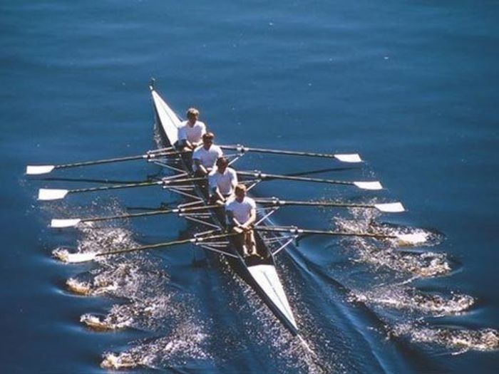
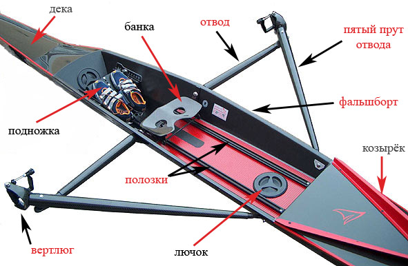

Академическая гребля

Четверка парная
Определение
Академическая гребля — циклический вид спорта. Спортсмены находятся в лодках и гребут вёслами, используя мышцы спины, рук и ног, проходя дистанцию спиной вперёд, в отличие от гребли на байдарках и каноэ. Наиболее распространена и популярна в странах Западной Европы, России, США, Австралии, Новой Зеландии и Румынии.
Академическая гребля включена в программу Олимпийских игр c 1896 года (у женщин с 1976 года). Кроме Олимпийских игр ежегодно проводится Чемпионат мира, Кубок мира, Кубок Наций, Чемпионат мира среди студентов, Чемпионат мира среди юношей.
Международная федерация гребли
Международная федерация гребного спорта (ФИСА) — организует и проводит соревнования по академической гребле в программе Олимпийских игр, совершенствуют систему проведения соревнований, проводит чемпионаты мира, курирует международные соревнования и проводит работу по развитию вида спорта, расширению географии, совершенствованию правил соревнований, методики подготовки гребного инвентаря и развитию водного туризма. Эту работу выполняют соответствующие комиссии в составе ФИСА.
Основы гребли
Идеальной техники гребли не существует, каждый «академист» имеет свою собственную технику, основанную на различных чувствах и представлениях о гребле. Задачей тренера является максимальная адаптация индивидуальной техники гребли спортсмена к различным условиям.
Гребок
Есть два основных момента в технике гребка — начало (также «зацеп» или «захват») и конец гребка. Оба они влияют на баланс, скорость движения и траекторию (как горизонтальную, так и вертикальную) движения лодки. С увеличением экипажа (то есть гребцов в лодке), значение этих двух моментов возрастает, так как в «идеале» момент начала и конца гребка всех членов экипажа должен быть одинаков, на самом же деле разница между гребцами (для профессиональных гребцов) в одном экипаже на момент начала (или конца) гребка составляет несколько сотых, а иногда и тысячных долей секунды.
Виды академической гребли
Соревнования по академической гребле проводятся среди мужчин и женщин. Академическая гребля делится на парную и распашную греблю. Парная гребля выполняется двумя вёслами, распашная гребля — одним веслом. Состав лодки бывает из одного, двух, четырёх или восьми гребцов. В ряде классов вес спортсмена ограничен.
Соревнования по олимпийской программе проводятся в 14 классах:
- Одиночки — мужские и женские;
- Двойки парные — мужские и женские;
- Двойки распашные — мужские и женские;
- Двойки парные лёгкого веса — мужские и женские;
- Четвёрки распашные — мужские и мужские лёгкого веса;
- Четвёрки парные — мужские и женские;
- Восьмёрки — мужские и женские;
Классы лодок в академической гребле, не входящие в программу олимпийских игр, но участвующие в программе чемпионатов мира:
- Одиночки — мужские и женские лёгкого веса;
- Двойки — мужские распашные с рулевым; двойки мужские распашные лёгкого веса;
- Четвёрки — мужские распашные с рулевым; четвёрки — распашные женские, четвёрки — мужские и женские парные лёгкого веса;
- Восьмёрки — мужские лёгкого веса;
Вес рулевого ограничен (если он меньше нормы, то в лодку кладут балласт), а его пол не зависит от пола членов экипажа. В женском экипаже может быть рулевой-мужчина, и наоборот. Исключение — Олимпийские игры (все спортсмены в экипаже должны быть одного пола).
Изредка на коммерческих турнирах проводятся также соревнования смешанных четвёрок и восьмёрок, наполовину состоящих из женщин и мужчин.
Различия гребцов
В академической гребле чётко различаются гребцы парного весла (одновременно гребёт двумя вёслами) и гребцы распашного весла (гребёт только одним веслом).
Гребцы распашного весла делятся на загребных (весло справа) и баковых (весло слева). Расчёты показывают: чтобы избежать вихляния лодки, загребные должны прикладывать на 5 % усилий больше, чем баковые; в четвёрках и восьмёрках самых сильных загребных следует сажать ближе к носу.
Особенности академической гребли
Академическая гребля очень сильно отличается от гребли на байдарках и каноэ: как по способу движения, так и по получаемым со стороны спортсмена нагрузкам. Академическая гребля — это один из немногих видов спорта, в котором спортсмен задействует около 95 % мышц всего тела. Основные отличия от гребли на байдарках и каноэ таковы:
- Длина прохождения дистанции
Варьируется от 500 метров до 160 километров, в зависимости от характера гонок: У юниоров «Б» (младше 16 лет) — 500—1500 метров, у юниоров «А» (16-18 лет) от 1000 до 2000 метров, у «U-23» и старше стандарт 2000 метров. Заезд на дистанцию более 2000 метров — считается марафоном.
- Способ движения
Для «академистов» характерно движение спиной вперёд, причём коррекция движения лодки осуществляется по специальным дорожкам (буйкам)
- Инвентарь
- Скорость движения
До 20 км/ч (средне-ходовая для 8+) и до 30 км/ч (на «рывках» (старт/финиш)), об этом можно судить по показанному времени прохождения дистанции (2000 м). Самыми скоростными лодками считаются 8+
- Техника самой гребли
Оборудование
Академические суда — спортивные узкие удлинённые лёгкие лодки с вынесенными за борта уключинами (кронштейнами) для вёсел и подвижными сиденьями (банками). Лодки различаются на учебные (любительские) и гоночные. Учебные лодки как правило шире и имеют более высокие борта.
Сначала лодки делались исключительно из дерева, откуда сложилось разделение типов лодок по способу изготовления. «Клинкер» обшивался набором продольных реек. «Скиф» — фанерой или шпоном ценных пород дерева, позднее — композиционными материалами. Сейчас, когда «клинкерная» техника и «клинкерные» лодки ушли в прошлое, «скифами» стало принято называть все гоночные лодки.
С 1980-х годов лодки производятся из углеродных материалов по технологии многослойного сэндвича, с применением в качестве связующего высококачественных эпоксидных смол. Стоимость лодок высока — например, стоимость одиночки начинается от 1.200.000 руб.
Требование правил соревнований к гребному инвентарю
- Конструкция подножки должна позволять гребцу в случае опрокидывания покинуть лодку без помощи рук в кратчайшее время.
- Нос лодки должен быть оборудован белым литым резиновым шариком и держателем для флюгарки.
- Минимальный вес лодки без вёсел и радиосистем должен быть:
- 4+ (четвёрка рулевая) — 51 кг
- 2х, 2 — (двойка парная и безрульная) — 27 кг
- 1х (одиночка) — 14 кг
- 2+ (двойка рулевая) — 32 кг
- 4 — (четвёрка безрульная) — 50 кг
- 4х (четвёрка парная) — 52 кг
- 8+ (восьмёрка) — 96 кг
- Толщина лопаток распашных вёсел в 3 мм от края по всему периметру должна быть не менее 5 мм, а у парных вёсел в 2 мм от края — не менее 3 мм.
Вёсла
Вёсла для академической гребли изготавливаются на основе эпоксидного связующего «горячего» отверждения, что обеспечивает им высокие упруго-прочностные свойства, эксплуатационную стабильность и минимальную массу. Стержень имеет овальное сечение и производится методом намотки, с последующим отверждением под давлением. Лопатка весла имеет трёхслойную конструкцию и изготавливается методом «прямого» прессования.
Соревнования
- Регата на реке Чарльз (англ. Head of the Charles Regatta) — соревнование на реке Чарльз, которая разделяет Бостон и Кембридж в штате Массачусетс, США.
- Хенлейская королевская регата
- Оксфорд — Кембридж — традиционная, ежегодная лодочная регата по Темзе, проводится с целью выяснения «чей университет лучше».
Традиции гребли
На Западе академическая гребля имеет давние традиции, которые соблюдаются неукоснительно несколько веков.
- С начала XIX века на реке Темза в Лондоне проводится классическая Королевская регата между экипажами университетов Оксфорда и Кембриджа.
- Длина дистанции составляет 2 километра (за исключением нескольких классических гонок в Великобритании). Очень редко (чаще на юношеских и ветеранских гонках) дистанция составляет один или полтора километра.
- На старте не используется техника — лодки до стартового сигнала держат стюарды гонок.
Определение терминов и жаргонных выражений
- Банка — подвижное сиденье (из пластика или древесины), имеет 4 колеса, движется по полозкам (рельсам).
- Подножка — обувь, объединённая металлической пластиной, используется для опоры и толчка в момент гребли. Как правило, в классах без рулевого правый ботинок у одного из гребцов связан с рулевым механизмом в дне лодки, благодаря которому может осуществляться корректировка курса лодки.
- Руль — металлический стержень с пластиковым концом (не всегда) с одной стороны (находящийся в воде) и металлической пластиной в форме буквы «Т» (тросы крепятся по бокам, центральный выступ-стрелка является ориентиром для рулевого) с другой.
- Полозки — два рельса, предназначенных для движения банки внутри лодки. Имеют пластиковые ограничители с обоих концов.
- Отвод /кронштейн — трубки (металлические, карбоновые) скреплённые в виде конуса. Крепятся по бортам лодки (слева и справа у парных, слева или справа у распашных). Используется как точка опоры для весла.
- Фальшборт — пластина (из того же материала, что и сама лодка), крепящаяся перпендикулярно вдоль бортов. Служит для защиты от брызг.
- Волнорез — крепится позади первого номера. Служит для защиты от попадания воды во время движения лодки.
- Лючок — подвижная пластиковая пластина в форме круга, с ручкой и резьбой. Служит «дверцей» между окружающей средой и внутренней полостью лодки.
- Вертлюг — пластико-металлическое изделие, крепится на конце кронштейна. Служит для подвижного крепления весла к лодке.
- Каретка — металлическая конструкция на пластиковых колёсах, снабжённых подшипниками, являющаяся элементом подвижного сиденья (банки). Каретки имеют два стандартных типоразмера, в зависимости от расстояния между колёсами одной оси.
- Крепление упора — пластиковая планка с подвижным фиксатором для крепления и изменения месторасположения упора (подножки) в различных типах академических судов.
- Носик — резиновый наконечник в форме шарика на носу академической лодки. Элемент безопасности для предотвращения травм спортсменов и повреждения инвентаря при столкновениях.
- Барашек — пластиковый фиксатор для парного и распашного вертлюга с металлическим резьбовым вкладышем.
- Каблук — пластиковый ограничитель длины рычага весла.
- Манжет — пластиковая накладка цевья для фиксации угла атаки лопатки в рабочей фазе гребка.

Интересные факты
- Самому юному чемпиону по академической гребле было всего 10 лет. Его посадили на место заболевшего рулевого. Экипаж, в составе которого он находился, стал победителем. Это случилось в 1900 году.
- Англичанин Стив Редгрейв — самый выдающийся спортсмен в академической гребле — побеждал на протяжении двух десятков лет во всех чемпионатах мира и Олимпиадах. Перед Играми 1992 года в Барселоне врачи обнаружили у Стива сахарный диабет, но он всё равно выступил и выиграл своё третье олимпийское «золото». Затем были ещё две Олимпиады — в Атланте в 1996 и в Сиднее в 2000 — на которых Стив поднимался на высшую ступень пьедестала почёта. Стив Редгрейв завершил свою триумфальную спортивную карьеру пятикратным олимпийским чемпионом.